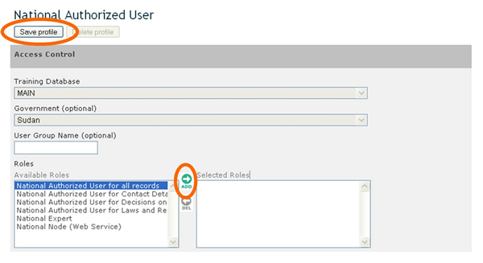

En algunos casos los PFN-CIISB pueden querer delegar a Usuarios Nacionales Autorizados (UNA) algo o toda su responsabilidad de registrar información en el CIISB.
Los UNA pueden crear y administrar registros borradores en todas las categorías de información del CIISB (a excepción de los registros de Puntos Focales Nacionales). Sin embargo, todos los registros creados por UNA, al igual que cualquier modificación que hagan a registros existentes, serán sometidos a validación por el PFN-CIISB en el caso de registros Nacionales, o por la Secretaría en el caso de registros de Referencia antes de su publicación.
El enlace National Authorized Users en la sección Administration proporciona acceso a una página para administrar y crear UNA.
El proceso para crear un UNA es el siguiente:
-
Inicie sesión en el Centro de Gestión (en http://bch.cbd.int/managementcentre/ );
-
Haga clic en National Authorized Users en el menú de la izquierda debajo del título Administration;
-
Haga clic en el botón Create an account;
-
En la sección Identification de la página que aparece, ingrese una cuenta de correo electrónico válida en el campo Account ID;
-
En la sección Contact details ingrese el nombre de la persona.
-
En la sección Access Control, seleccione el rol del Usuario Nacional Autorizado para todos los registros del campo Roles;
-
Haga clic en el icono que hace que el rol aparezca en el campo Selected Roles; and
-
Haga clic en el botón Save profile en la parte superior de la página.

Figura 40
La identificación de una cuenta de un nuevo UNA debe ser una cuenta de correo electrónico válida. Se establecerá una comunicación con el usuario a través de esa cuenta de correo electrónico.
Actualmente, el sistema no permite a los PFN-CIISB agregar roles de un Usuario Nacional Autorizado a una cuenta existente. Si necesita esto, por favor contacte a la Secretaría.

Figura 41

Figura 42
Debajo de la sección Access Control, seleccione el rol para el UNA del campo Available Roles” y haga clic en el icono de flecha Add para asignar un rol al usuario (por lo tanto agregando el rol al campo Selected Roles). Para remover un rol, realice la operación inversa: seleccione un rol del campo Selected Roles y haga clic en el ícono de flecha Del. Una vez terminado, haga clic en el botón Save profile en la parte superior de la página.